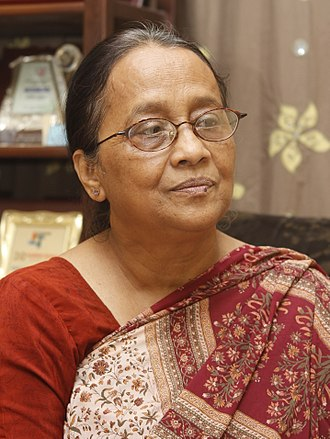
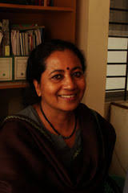
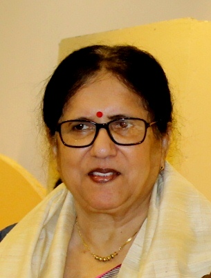

Selina Hossain (born 1947)
acclaimed novelist

Selina Hossain is a Bangladeshi novelist.[1][2] Her major works include Hangor Nodi Grenade
(1976) and Poka Makorer Ghor Boshoti (1996).[3] She earned all major national awards - Bangla Academy
Literary Award in 1980, Ekushey Padak in 2009 and Independence Day Award in 2018.[4]
Her novels and short stories have been translated into English, Russian, French, Japanese, Korean,
Finnish and Malay.[5][6] She is the present chairperson of Bangladesh Shishu Academy.
Selected works:
Josnay Shurjo Jala (1973),
Jolochchhas (1972),
Hangor Nodi Grenade (1976),
Magna Caitanye Shis (1979),
Japito Jibon (1981) ,
Podoshobdo (1982),
Neel Moyurer Joubon (1983),
Chand Bene (1984),
Poka Makorer Ghor Boshoti (1986),
Nirontor Ghontadhoni (1987),
Ksharan (1988),
Katatare Projapoti (1989),
Khun O Bhalobasha (1990),
Kalketu and Fullora (1992),
Bhalobasha Pritilota (1992),
Tanaporen (1994),
Gayetree Shondha (1996),
Dipannita (1997),
Gachhtir Chhaya Nai (2012),
Shonali Dumur (2012),
August-er Ak Raat (2013),
Guerilla O Beerangona (2014),
Dinkaler Kathkhor (2015)
Saleha's Desire
Achievement:
Dr. Muhammad Enamul Huq Gold Medal (1969),
Bangla Academy Literary Award (1980),
Alaol Literary Award (1981)[5],
Kamar Mushtari Memorial Prize (1987),
Philips Literary Prize (1994),
Alakta Literary Award (1994),
Ekushey Padak (2009),
Rabindra Smriti Puraskar by IIPM. New Delhi (2010),
Chandrabati Academy Gold Medal (2010),
International Award for Doctor of Literature (Honoris Causa) from the Rabindra Bharati University (2010),
Surma Choudhury Memorial Award by IIPM New Delhi (2011),
SAARC Literary Award (2015)[10],
Independence Day Award (2018)
Shaheen Akhtar
Novelist, short story writer, editor

She was born in Comilla and studied economics at Dhaka University.She works as an editor in the Media and Communication Unit of Ain o Salish Kendra, a civil rights organization in Dhaka
Selected works:
Talaash (The Search), novel, won the Prothom Alo Literary prize in 2004, translated into English in 2011
Shokhi Rongomala (Beloved Rongomala), novel
Boner Shange Amarloke (Sisters in eternity), short stories
Poneroti Golpo (Fifteen stories), short stories
Soti O Swotontora: Bangla Shahitye Nari, editor
Zenana Mehfil: Bangali Musalman Lekhikader Nirbachita Rachana, 1904-1938 (Women in Concert: An Anthology of Bengali Muslim Women's Writings, 1904-1938)
All these books have helped
her to achieve “Bangla Academy Literary Award (2015) & Prothom Alo Literary prize .
Monika Ali
Bangladeshi-British novelist, essayist
Monica Ali (born 20 October 1967) is a Bangladeshi-born British writer and novelist.
In 2003, she was selected as one of the "Best of Young British Novelists"
by Granta magazine based on her unpublished manuscript; her debut novel,
Brick Lane, was published later that year. It was shortlisted for the Man Booker Prize.
It was adapted as a 2007 film of the same name. She has also published three other novels.
Selected works:
Brick Lane (2003), Doubleday
Alentejo Blue (2006), Doubleday
In the Kitchen (2009), Doubleday
Untold Story (2011), Scribner
Purabi Basu
21st-century short story writer, women's rights activist

Monica Ali (born 20 October 1967) is a Bangladeshi-born British writer and novelist.
In 2003, she was selected as one of the "Best of Young British Novelists"
by Granta magazine based on her unpublished manuscript; her debut novel,
Brick Lane, was published later that year. It was shortlisted for the Man Booker Prize.
It was adapted as a 2007 film of the same name. She has also published three other novels.
Selected works:
Basu worked as a director of the health, nutrition and population division at BRAC
Radha Will Not Cook Today
Saleha's Desire